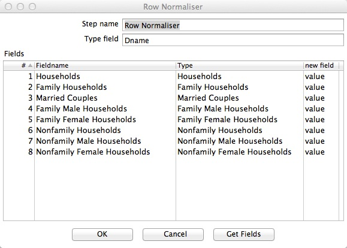

Configure Row Normaliser
- Double-click on the Row Normaliser Step.
- The configuration window belonging to this kind of step will appear.
- Type "Dname" into "Type Field" if it's not already in the template.
- Click Get fields to add the fields from the previous steps to the grid.
- Delete the fields from this step which are used to uniquely identify each row of your input file.
In this case, we will be deleting the Start Fieldname and End Fieldname because they will be used as schema.
- Fill in Value into the new field column for each remaining fieldname.
This will generate a new row in our target schema for each unique combination of
Start, End and Field tagged here with Value.

- Click OK to finish defining the Step Row Normaliser step.